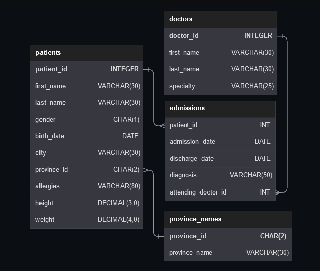
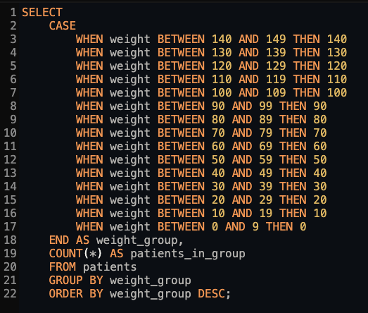
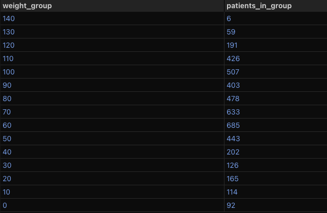
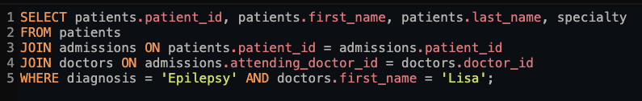
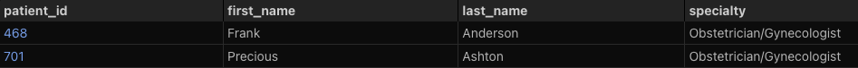
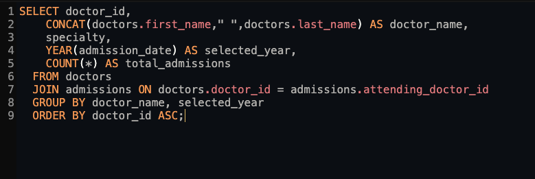
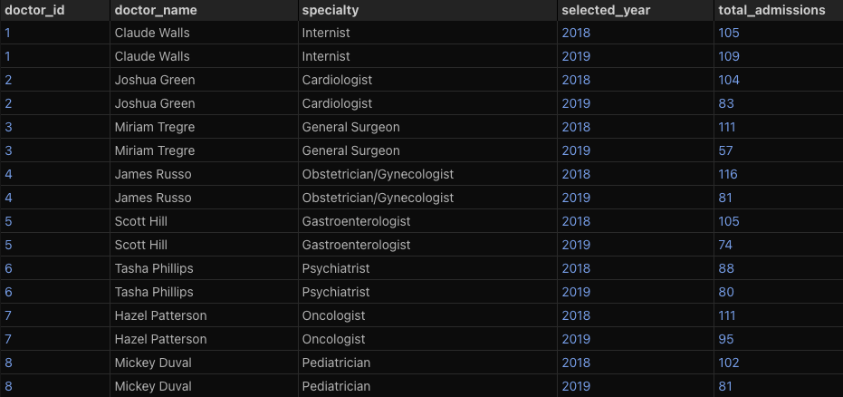

This report explores a relational hospital database consisting of four linked tables: patients, doctors, admissions, and province names.
Using SQL, I queried across these tables to uncover insights around patient demographics, admission patterns, diagnoses, and physician activity.
The goal was to practice writing multi-table joins, aggregations, and filtering logic while drawing meaningful conclusions from a realistic healthcare dataset.
The sample data and questions can be found here.

Show all of the patients grouped into weight groups.
Show the total amount of patients in each weight group.
Order the list by the weight group decending.
For example, if they weight 100 to 109 they are placed in the 100 weight group, 110-119 = 110 weight group, etc.


Show patient_id, first_name, last_name, and attending doctor's specialty.
Show only the patients who has a diagnosis as 'Epilepsy' and the doctor's first name is 'Lisa'.
Check patients, admissions, and doctors tables for required information.


We need a breakdown for the total amount of admissions each doctor has started each year.
Show the doctor_id, doctor_full_name, specialty, year, total_admissions for that year.

